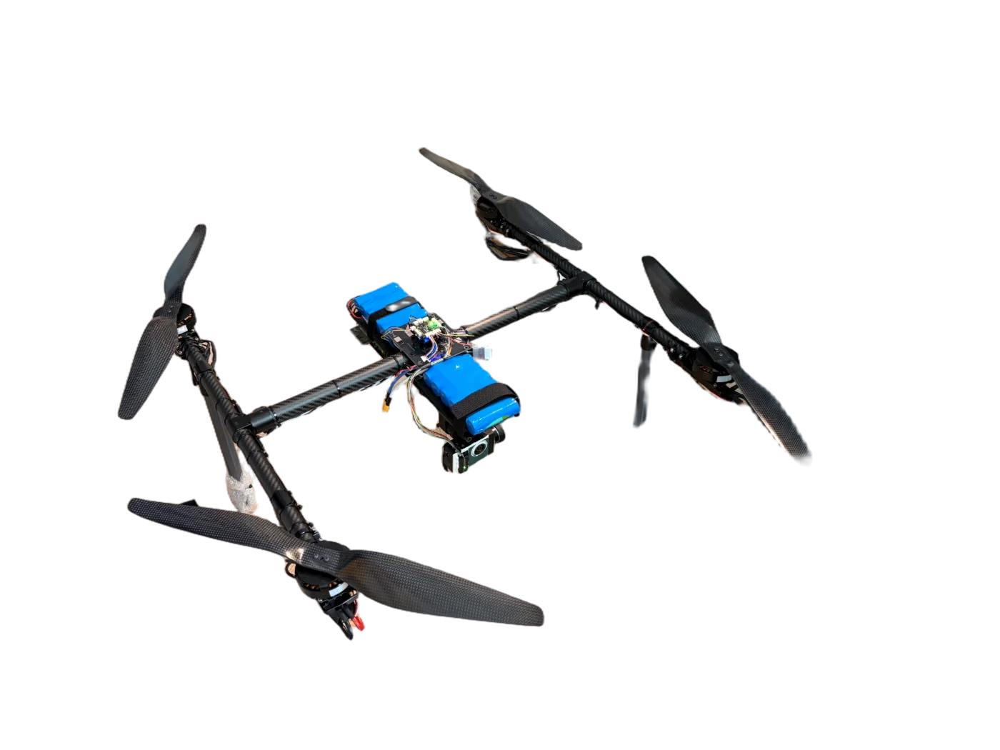
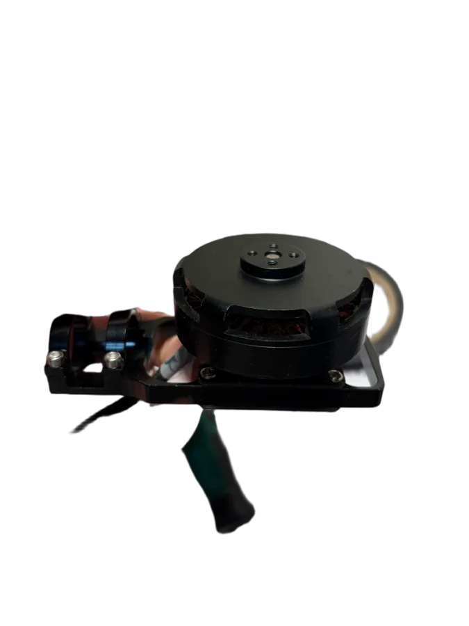
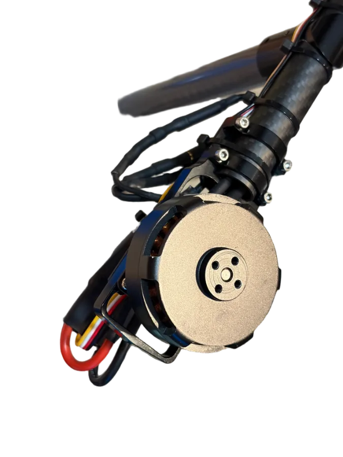
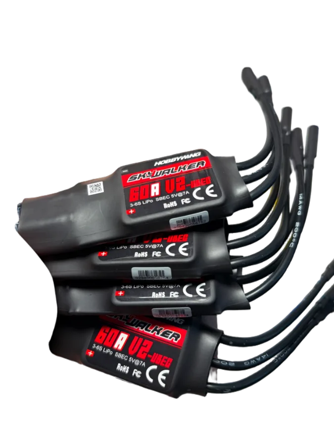

轻型运输
1kg 级别的有效载荷，是把「少量、急需、时效敏感」的东西送出去最现实的量级。整机围绕这个任务做取舍。
我们只做一件事：让 H 型构架的飞行平台把载荷稳稳送到目的地。从 HyicoFly-H770 的机身，到 HyicoPlatform 的云端运营，再到 HGC 地面站的操作手感，全部由同一支团队设计。
机体、载荷、软件不是三家公司拼起来的产品，而是同一支团队从同一张图纸做出来的东西，所以它们才能真正咬合在一起。
1kg 级别的有效载荷，是把「少量、急需、时效敏感」的东西送出去最现实的量级。整机围绕这个任务做取舍。
稳定的低速平台与开放的载荷接口，让传感器能按计划飞完每一条测线，而不是被飞机本身的不确定性打断。
HyicoPlatform 把飞行数据接进大数据管道，用 DeepSeek 做语义层的分析与问答，让运营者看懂发生了什么。
下面都是我们自己装机的实拍，不是渲染图。图纸能说明结构关系，但要判断用料和做工，还是得看实物。

中梁从中心板中间穿过，两端直接接三通分出机臂；两组电池被夹在中心板里，而不是挂在机身外面；四支桨都是碳纤维折叠桨，收起来之后运输尺寸小很多。



HyicoPlatform 负责把飞机、载荷和数据连成一条完整的运营链路；HGC 负责让飞手在强光、颠簸和高压下依然能准确操作。
远程监控与运营平台。接入飞行日志、遥测与载荷数据，形成一个可以回放、可以检索、可以追问的数据底座，并接入 DeepSeek 做自然语言层的分析。
HGC 是飞手的地面站。任务规划、航线上传、实时告警与一键日志都按飞行操作的顺序排列，界面设计服从于「不要让人在关键时刻找按钮」。
市面上大多数小型多旋翼是 X 型构架。我们选择 H 型，是因为在「载重 + 长航时 + 可维护」这三个约束同时成立时，H 型给出了更好的整体解。
| 维度 | H 型构架 | X 型构架 |
|---|---|---|
| 机身布局 | 两根纵梁 + 中央横梁 | 四臂交汇于一点 |
| 载荷安装 | 中央舱体空间连续 | 中心被机臂占据 |
| 维护性 | 单侧损伤可局部更换 | 一体化机架，牵动全身 |
| 扩展性 | 纵梁加长即可变更轴距 | 需重新设计机身 |